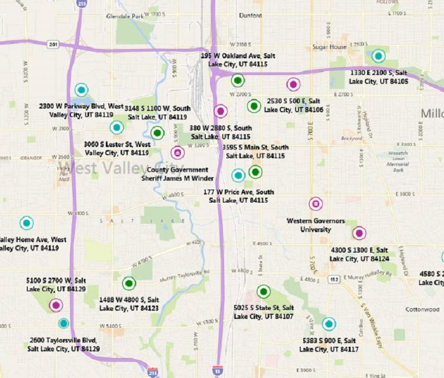

Joseph Maulin
Home
About
Projects
Nba Expenditure Analysis
jc-gellidon-XmYSlYrupL8-unsplash.jpg
It seems like everyone wants to be an NBA star. With all the fame, glitz, glamour, and let's not forget… the money! But what does it take to make the kinda doe NBA stars pull? Let's dive into what kind of stats you would need to put up to make the big bucks in the NBA.....
[read more]
WGUPS - Package Delivery Routing System

The Western Governors University Parcel Service (WGUPS) needs to determine the best route and delivery distribution for their Daily Local Deliveries (DLD) because packages are not currently being consistently delivered by their promised deadline. The Salt Lake City DLD route has three trucks, two drivers, and an average of 40 packages to deliver each day; each package has specific criteria and delivery requirements.
[read more]
Appointment Scheduler
A desktop scheduling user interface application designed for a global organization. Utilizes a MySQL databasee to track user and agent business needs. Ability to add, update, and delete appointments. Notify user of upcoming appoiintments. Provides a calander view of appointment schedule.
[read more]
Class Roster Migration
Program to migrate an existing student system to a new platform using C++ language.
[read more]